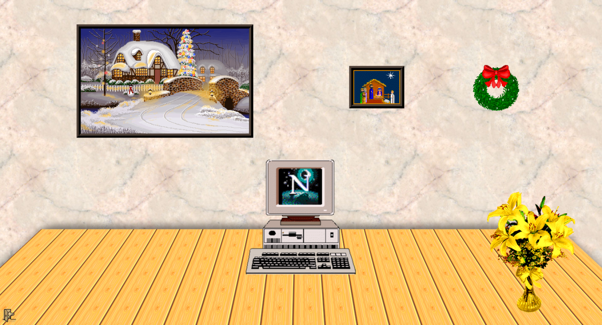
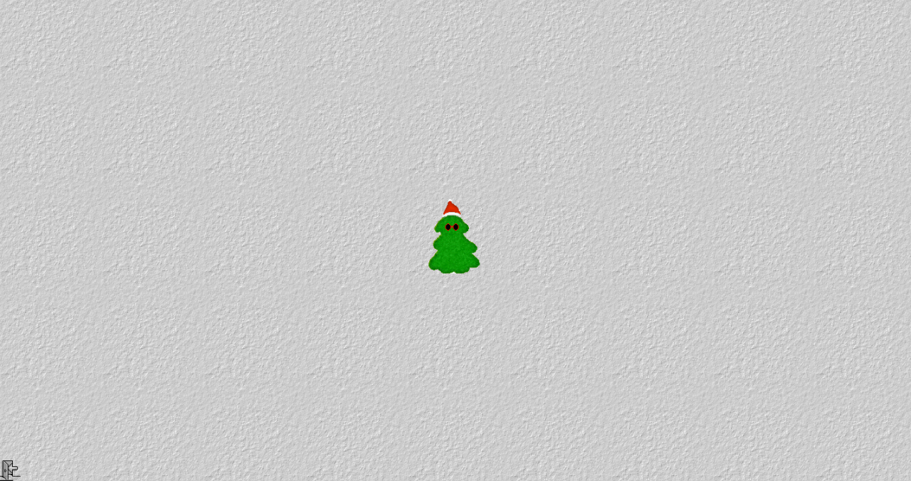

2018.12.11. 7:26:41 ¶ ● duplexide: As I reluctantly trudge into the holiday season my only solace in the world is this geocities advent calendar from the early days of the internet. Enjoy! http://owac.de/Here’s some screenshots of some of the animations you might find accompanied by the various midi masterpieces behind each door. 